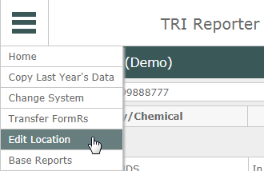
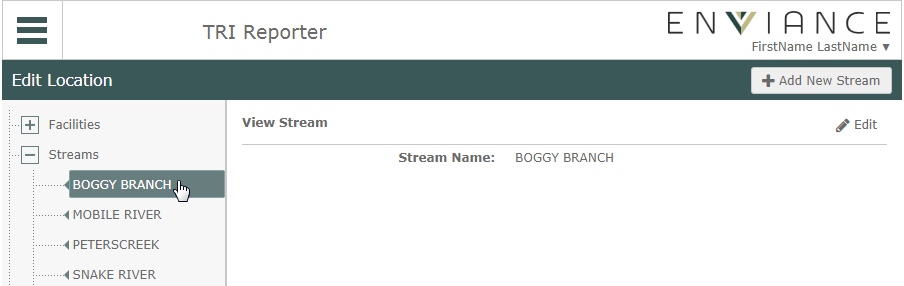
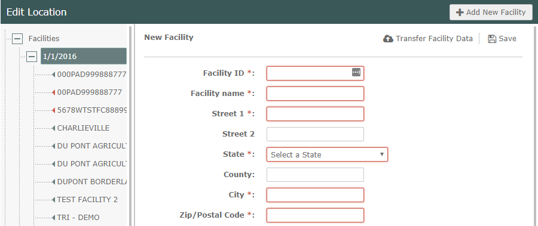
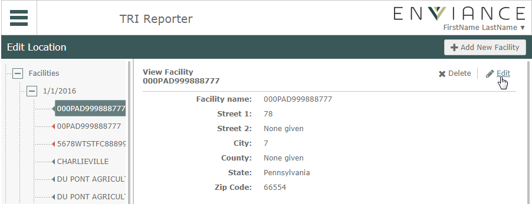
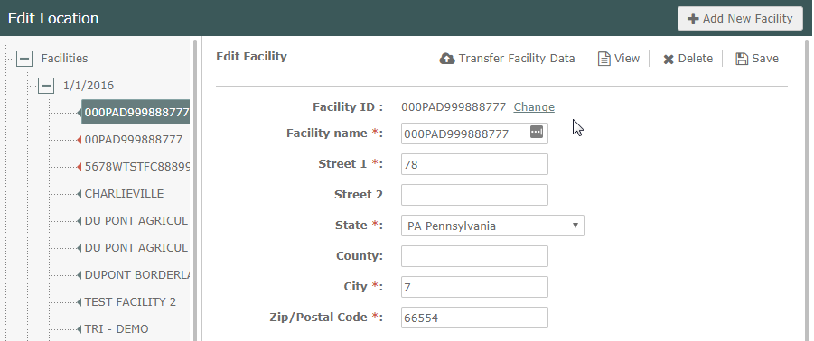
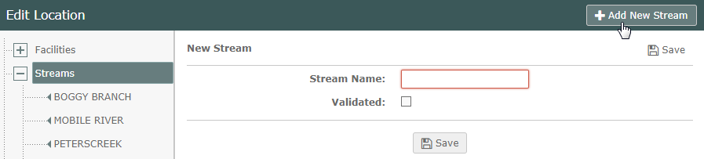
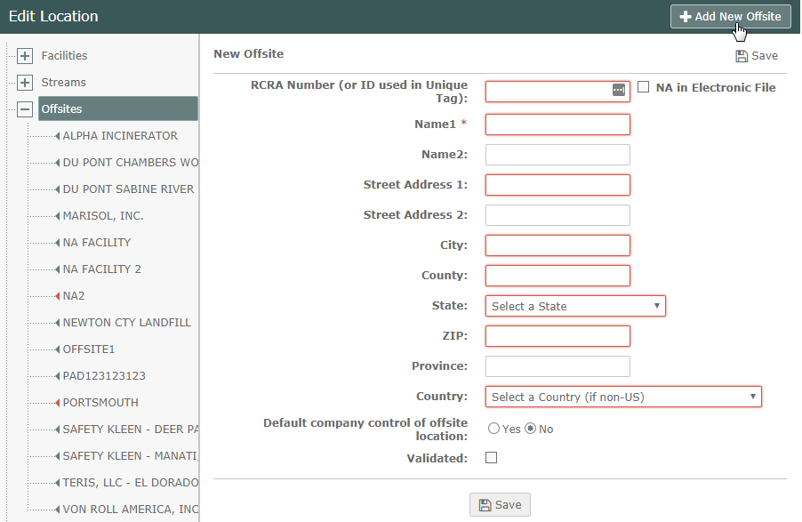
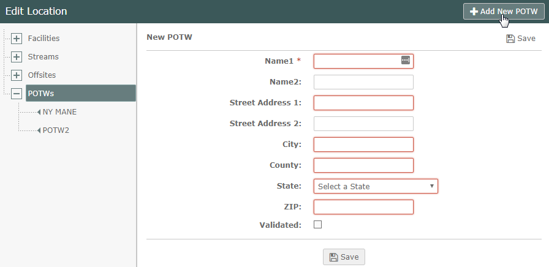

Locations include the Facilities listed on the Home page, as well as the Streams, POTWs and Off-Site Locations used in the FormRs.
If you maintain your TRI data in the EMS platform, you can transfer the location information from the EMS platform. If you do not maintain TRI data in the EMS platform, you can enter and edit the Locations manually.
To edit locations:
From the main menu button, select Edit Location.

The Facilities, Streams, Offsites and POTWs are shown on the left.
Click the plus sign to expand a location type.
Select the location name to view the location information.

Click the Edit button (top right) to edit the location information.
This section defines the Facilities for which FormRs are filed. They are displayed in the Facilities list on the home page.
Facility Information is tracked on a yearly basis, so the filing years are shown. Expand the year to show the facilities.
To add a Facility:
Select the year for which you want to add a facility.
Select the Add New Facility button (top right).

If you do not maintain TRI data in the EMS platform, you can enter your facility information manually. Complete all the required fields highlighted in red.
If you maintain your TRI data in the EMS platform, you can transfer the facility information from the EMS platform. First, enter the Facility ID that matches the unique tag set up in the system. Then click Transfer Facility Data (top right).
Note: The unique tag in the EMS platform must have the same alphanumeric string at the end as Facility ID in TRI Reporter.
Note: The Facility Name is the "Official Facility/Program Name" from the Facility properties in EMS. This will be the default name if you transfer the facility information. However, you may change the name of the facility in TRI Reporter if desired.
For details on setting up the EMS platform for TRI reporting, see the configuration document: TRI Data Tagging.
If you added a new facility by transferring the facility information from the EMS platform, you can then transfer the TRI data from that facility. See Transfer Data .
To edit a Facility:
Click the plus sign to expand the year, then select the facility.
Select the Edit button (top right).

In order to edit a facility, there must be no FormRs for that year with Submitted status for that facility. If you need to edit a facility with submitted FormRs, return to the home page and de-submit all FormRs associated with the facility. When all FormRs are de-submitted, you will then be able to edit the facility.
Note: The unique tag in the EMS platform must have the same alphanumeric string at the end as the Facility ID in TRI Reporter. You can change the Facility ID by clicking the Change link on the Edit Facility page in TRI Reporter. However, if you change the Facility ID, be sure to change the unique tag to match in the EMS platform.

After completing your edits, click Save.
This section defines the streams used in Section 5.3 to document discharges to streams and water bodies. In order for a stream to appear in the list for selection, it must be validated.
To add a Stream:
Select Streams from the locations on the left.
Select the Add New Stream button (top right).

Enter the stream name. To make the stream valid for use, check Validated.
To remove a stream from the list for future use, edit the stream and uncheck Validated.
This section defines the offsite locations are used in Section 6.2 to document transfers to offsite locations. In order for it to appear in the list for selection, it must be validated.
Information for offsite locations may be exported from the system to Excel.
To add an Offsite location:
Complete the information fields for the offsite location. To make it valid for use, check Validated.

The RCRA ID Number (EPA Identification Number) may be found on the Uniform Hazardous Waste Manifest, which is required by RCRA regulations. If the off-site location to which you ship or transfer wastes does not have an EPA Identification Number (e.g., it does not accept RCRA hazardous wastes) check NA for the RCRA Number.
To remove an offsite location from the list for future use, edit the offsite and uncheck Validated.
To export offsite location information:
This section defines the Publicly Owned Treatment Works (POTWs) that used in Section 6.1 to document discharges to POTWs. In order for a POTW to appear in the list for selection, it must be validated.
To add a POTW:
Complete the information fields for the offsite location. To make it valid for use, check Validated.

To remove a POTW from the list for future use, edit the POTW and uncheck Validated.